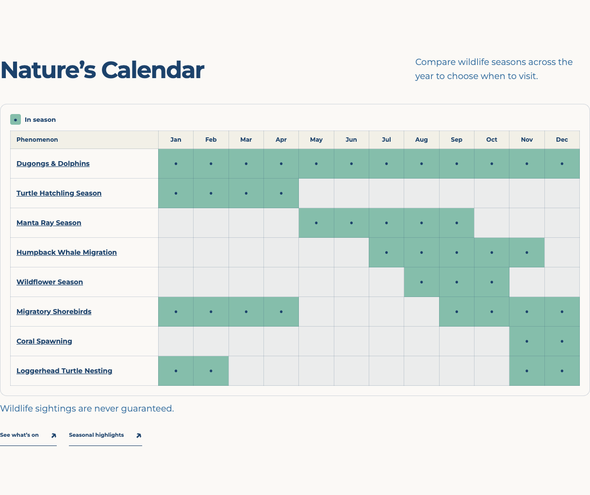
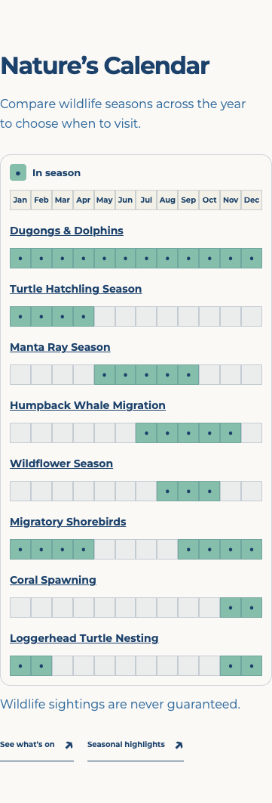
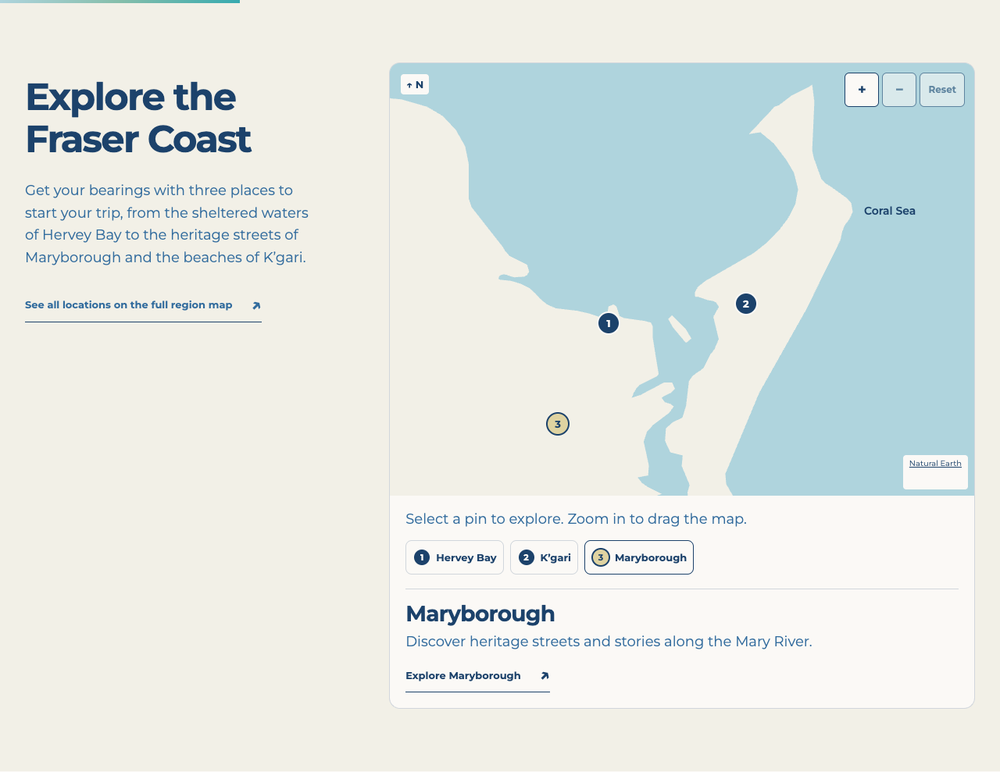
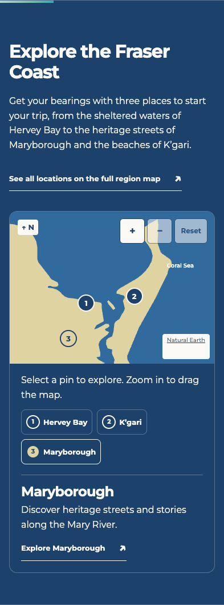

Prepared for Levi’s review. Not yet approved by Christian. This is the first concept with Christian’s calendar and map feedback; it does not include the later revision 04 additions.




The map is an offline Natural Earth coastline demonstration, not a production Mapbox integration. Its three featured locations illustrate the homepage subset. No live CMS, bookings or AI services are connected. Planner and local-guide dialogs are local demonstrations. Navigation opens the development site and may require access. Seasonal data is preserved from the captured homepage and still needs editorial freshness confirmation. Photographs and the existing logo are interim review assets; final artwork and reuse permissions remain implementation inputs.
Campaign prose is proposed editorial content. Interface strings are annotated in the shared catalogue. No other page template or application theme was changed.
Manual review found destination links overlapping later categories. A desktop-only height cap was incorrectly applied to mobile. The cap now applies only above 900px, so each mobile category expands fully inside the scrolling menu. Two regression tests failed before the fix and passed afterwards, checking all six categories in both themes and menu closure.
Corrected mobile menu screenshot · Regression test results
Eight reference unit tests passed. Shared geometry and injected spacing/type drift checks passed for all twelve drawings. Browser checks passed in four homepage states: six menus, twelve months, map pins/zoom/keyboard pan/reset, dialogs, loaded images and no horizontal overflow or JavaScript errors. Automated WCAG 2.1 A/AA scans found no violations in these four states; this is not accessibility certification. Full application E2E, CMS integration, remote CI and PR checks have not been run for this local review package.
Browser results · Accessibility results · Image sources
Compare the final drawing with the existing Payload homepage blocks during #717 planning. Resolve seasonal content, map data/provider, approved assets and proposed copy there. No #717 workflow has started. #714 stays open until the children and final joint review are complete.
Coordination reminder: agree a Friday afternoon call time with Christian and Michelle, confirm attendees and decision ownership while Michelle is away. No invitation has been sent.